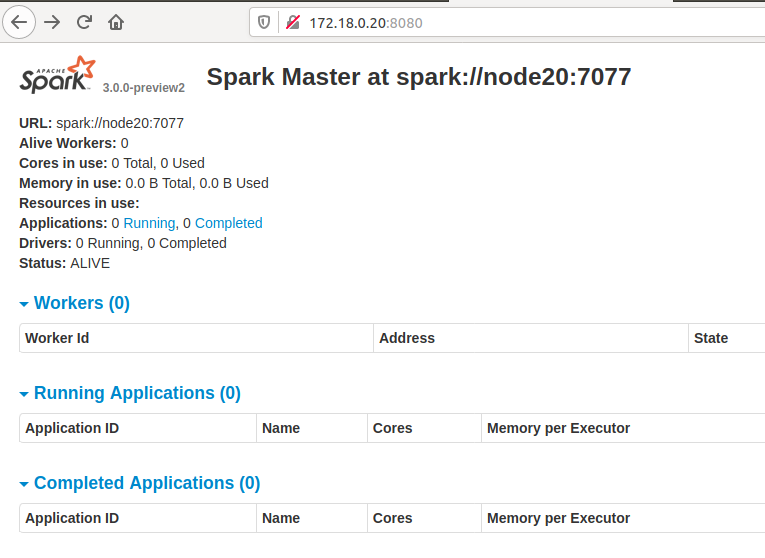
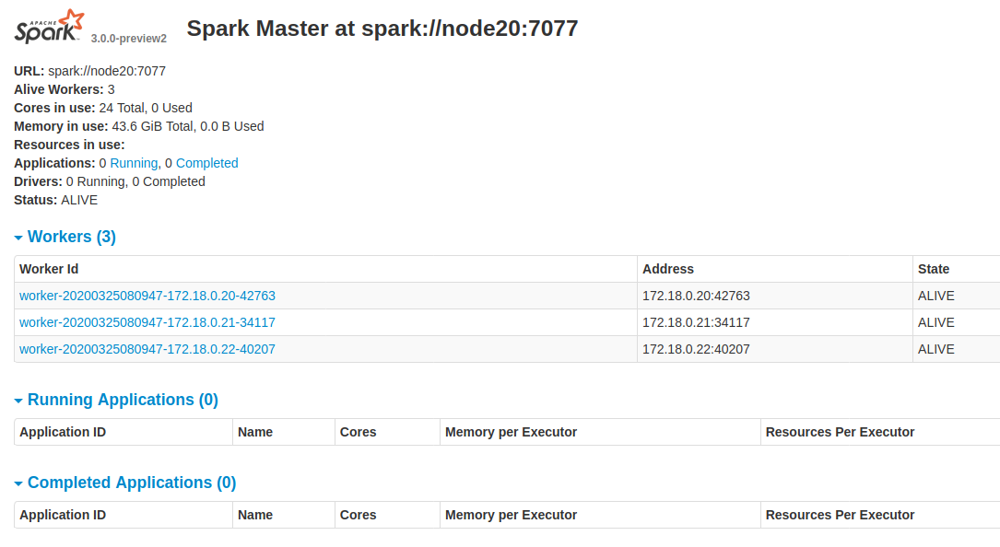
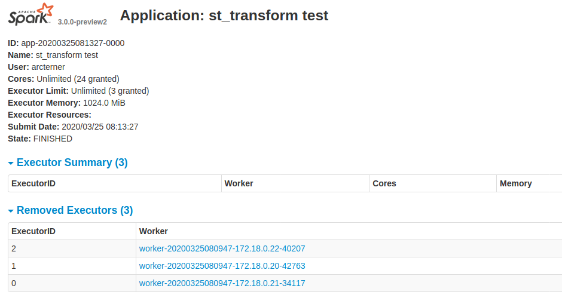

模拟 Spark Standalone 集群的安装部署¶
本文介绍使用 Docker 技术在一台主机上启动三个容器，并将它们组织成一个 Spark Standalone 集群。之后，你将在该集群上运行 CPU 版本的 Arctern。三个容器的信息如下：
| Host name | IP address | Container name | Type |
|---|---|---|---|
| node20 | 172.18.0.20 | node20 | master |
| node21 | 172.18.0.21 | node21 | worker |
| node22 | 172.18.0.22 | node22 | worker |
启动容器¶
启动容器，并设置目录 $HOME/arcternas 映射到容器内的 /arcternas：
docker run -d -ti --name node20 --hostname node20 --net arcternet --ip 172.18.0.20 --add-host node21:172.18.0.21 --add-host node22:172.18.0.22 -v $HOME/arcternas:/arcternas ubuntu:16.04 bash
docker run -d -ti --name node21 --hostname node21 --net arcternet --ip 172.18.0.21 --add-host node20:172.18.0.20 --add-host node22:172.18.0.22 -v $HOME/arcternas:/arcternas ubuntu:16.04 bash
docker run -d -ti --name node22 --hostname node22 --net arcternet --ip 172.18.0.22 --add-host node20:172.18.0.20 --add-host node21:172.18.0.21 -v $HOME/arcternas:/arcternas ubuntu:16.04 bash
安装库¶
下面以 node20 为例展示如何安装库。你需要对 node21 和 node22 重复下方所述的操作。
进入 Docker 节点¶
# 登录 node20，后续你需要对 node21 和 node22 重复此操作
docker exec -it node20 bash
安装依赖库¶
apt update
apt install -y libgl-dev libosmesa6-dev libglu1-mesa-dev wget openjdk-8-jre openssh-server vim
service ssh start
# 新建 arcterner 用户
useradd -m arcterner -s /bin/bash
# 修改 arcterner 用户密码为 arcterner
echo -e "arcterner\narcterner" | passwd arcterner
# 修改目录 /arcternas 为 arcterner 所有
chown -R arcterner:arcterner /arcternas
exit
安装 Conda¶
以arcterner用户登录 Docker 节点：
# 以 arcterner 用户登录 node20，后续你需要对 node21 和 node22 重复此操作
docker exec -it -u arcterner node20 bash
在 Docker 节点上安装 Conda：
wget https://repo.anaconda.com/miniconda/Miniconda3-latest-Linux-x86_64.sh -O ~/miniconda.sh
bash ~/miniconda.sh -b
echo "source $HOME/miniconda3/etc/profile.d/conda.sh" >> .bashrc
rm ~/miniconda.sh
exit
以arcterner用户重新登录 Docker 节点：
# 以 arcterner 用户登录 node20，后续你需要对 node21 和 node22 重复此操作
docker exec -it -u arcterner node20 bash
执行 conda env list 查询 Conda 环境。如果打印了 base 环境，则 Conda 安装生效。
hadoop@node20:/$ conda env list
# conda environments:
base * /home/hadoop/miniconda3
安装 Arctern¶
创建一个名为 arctern_env 的 Conda 环境，并安装 Arctern：
conda create -y -n arctern_env -c conda-forge -c arctern arctern
进入 arctern_env 环境，并启动 Python：
conda activate arctern_env
python
尝试打印 arctern_pyspark 的版本，检查 Arctern 安装是否成功：
>>> import arctern_pyspark
>>> print(arctern_pyspark.version())
version : 0.2.0
安装 Spark¶
# 进入 Home 目录
cd ~/
# 下载 Spark
wget https://downloads.apache.org/spark/spark-3.0.0-preview2/spark-3.0.0-preview2-bin-hadoop2.7.tgz
# 解压 Spark
tar -xvf spark-3.0.0-preview2-bin-hadoop2.7.tgz
rm -rf spark-3.0.0-preview2-bin-hadoop2.7.tgz
执行 vim ~/.bashrc 以编辑 bashrc 文件。 在该文件中添加以下内容:
export SPARK_HOME=$HOME/spark-3.0.0-preview2-bin-hadoop2.7
执行 vim ～/spark-3.0.0-preview2-bin-hadoop2.7/conf/spark-env.sh 以编辑 spark-env.sh 文件。文件内容如下:
#! /usr/bin/env bash
export PYSPARK_PYTHON=$HOME/miniconda3/envs/arctern_env/bin/python
SPARK_WORKER_CORES=2
SPARK_WORKER_MEMORY=4g
配置主节点¶
登录 node20：
docker exec -it node20 bash
执行 vim ~/spark-3.0.0-preview2-bin-hadoop2.7/conf/spark-defaults.conf 以编辑 spark-defaults.conf 文件。文件内容如下:
spark.executorEnv.PROJ_LIB /home/arcterner/miniconda3/envs/arctern_env/share/proj
spark.executorEnv.GDAL_DATA /home/arcterner/miniconda3/envs/arctern_env/share/gdal
spark.executor.memory 2g
spark.executor.cores 1
结合 spark-env.sh 和 spark.defaults.conf 可知，当前的 Spark 集群一共有 2×3=6 个 CPU，4g×3=12g 内存，并且每个 executor 使用 1 个cpu，2 G 内存，一共有 6 个 executor。
执行 vim ~/spark-3.0.0-preview2-bin-hadoop2.7/conf/slaves 以编辑 slaves 文件。文件内容如下:
node20
node21
node22
设置免密登录¶
注意： 后续所有操作均在
node20上执行。
退出 node20 的 root 账户，再以 arcterner 用户登录 node20：
exit
docker exec -it -u arcterner node20 bash
设置 master 到 woker 的免密登录：
# 生成 ssh-key，用于免密登录
ssh-keygen -t rsa -P '' -f ~/.ssh/id_rsa
# cat ~/.ssh/id_rsa.pub >> ~/.ssh/authorized_keys
# 需要输入密码，密码为 arcterner
ssh-copy-id node20
ssh-copy-id node21
ssh-copy-id node22
启动 Spark 集群¶
启动 master：
$SPARK_HOME/sbin/start-master.sh
关闭浏览器代理，在浏览器中输入 http://172.18.0.20:8080/，验证 master 是否正确启动：

启动 slaves：
$SPARK_HOME/sbin/start-slaves.sh

测试 Arctern¶
新建 gen.py 文件用于生成测试数据，内容如下：
from random import random
cnt=1000000
print("idx,pos")
for i in range(0, cnt):
lng = random()*360 - 180
lat = random()*180 - 90
print(i,"point({} {})".format(lng,lat),sep=',')
生成测试数据，并将测试数据存入 /arcternas：
python gen.py > /arcternas/pos.csv
新建 st_transform_test.py，内容如下：
from pyspark.sql import SparkSession
from arctern_pyspark import register_funcs
if __name__ == "__main__":
spark = SparkSession \
.builder \
.appName("st_transform test") \
.getOrCreate()
spark.conf.set("spark.sql.execution.arrow.pyspark.enabled", "true")
register_funcs(spark)
df=spark.read.format("csv").option("header",True).option("delimiter",",").schema("idx long, pos string").load("/arcternas/pos.csv")
df.printSchema()
df.createOrReplaceTempView("pos")
rst = spark.sql("select idx,pos,st_transform(pos, 'epsg:4326', 'epsg:3857') from pos")
rst.write.mode("append").csv("/arcternas/st_transform/")
spark.stop()
向 Spark 提交 st_transform_test.py：
$SPARK_HOME/bin/spark-submit --master spark://node20:7077 st_transform_test.py
检查上述程序的运行结果：
ls -lh /arcternas/st_transform/
你也可以在浏览器中检查上述程序的运行情况：

参考文献¶
https://spark.apache.org/docs/latest/spark-standalone.html
https://www.programcreek.com/2018/11/install-spark-on-ubuntu-standalone-mode/